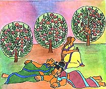
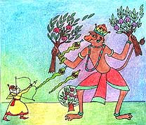

<html>
<!-- Mirrored from www.damodara.de/espaniol/html/jiva_tattva/Hanuman/Hanuman_09.htm by HTTrack Website Copier/3.x [XR&CO'2013], Sun, 23 Feb 2014 09:47:14 GMT -->
<head>
<title>Hanuman encuentra a Sita</title>
<meta http-equiv="Content-Type" content="text/html; charset=iso-8859-1">
</head>

<body bgcolor="#FFFFFF" text="#000000">
<table width="45%" border="0" cellspacing="15" cellpadding="0" align="center" bordercolor="#FFFFFF" bgcolor="#FFFFFF" height="1170">
  <tr> 
    <td width="419" height="232" valign="top"> 
      <blockquote>
        <div align="center"> 
          <p align="center"><font face="Comic Sans MS"><o:p></o:p>Hanuman encontr&oacute; 
            a Sita muy triste y melanc&oacute;lica sentada fuera del palacio en 
            un hermoso jard&iacute;n, y resguardada por algunos demonios que se 
            hab&iacute;an quedado dormidos, entonces, se desliz&oacute; por una 
            de las ramas de un &aacute;rbol de fruta.</font></p>
          <p><font face="Comic Sans MS" size="3">&iexcl;Psssst! -dijo Hanuman- 
            haci&eacute;ndole se&ntilde;as para llamar su atenci&oacute;n. Sita 
            levant&oacute; la mirada y qued&oacute; sorprendida al verlo.</font></p>
          <p><font face="Comic Sans MS" size="3">&iquest;Qui&eacute;n eres t&uacute;? 
            -pregunt&oacute; Sita-
            Yo soy Hanuman -respondi&oacute; suavemente- He sido enviado por Rama 
            para encontrarte, ahora debo volver para decirle a &eacute;l que te 
            he encontrado y luego volvere para rescatarte.
            &iexcl;Oh, gracias! -respondi&oacute; Sita, un poco m&aacute;s animada- 
            pero debes tener mucho cuidado, Ravana no es solamente muy poderoso, 
            sino tambi&eacute;n muy astuto.
            </font></p>
        </div>
      </blockquote>
    </td>
  </tr>
  <tr> 
    <td valign="top" height="185"> 
      <div align="center"> 
        <p><a href="../../../images/galeria/colores/radha%20m%20gopal/index.html"></a></p>
        <p><font face="Comic Sans MS" color="#000000" size="2"><b>Hanuman encuentra 
          a Sita</b></font></p>
      </div>
    </td>
  </tr>
  <tr> 
    <td height="271" valign="top"> 
      <blockquote> 
        <div align="center"> 
          <p><font face="Comic Sans MS" size="3">Justo en ese momento uno de los 
            demonios que resguardaban a Sita se despert&oacute;.</font></p>
          <p><font face="Comic Sans MS" size="3">&iexcl;Un intruso entre nosotros! 
            -grit&oacute; a los otros guardias- &iexcl;Debemos capturarlo!</font></p>
          <p><font face="Comic Sans MS" size="3">Y corrieron a atacar a Hanuman, 
            pero &eacute;l, de pronto se volvi&oacute; muy grande y fuerte, se 
            par&oacute; en medio del jard&iacute;n y arranc&oacute; dos &aacute;rboles 
            con sus ra&iacute;ces y todo, y empez&oacute; a girarlos en todas 
            direcciones para mantener a los demonios a distancia. Cuando Ravana 
            se enter&oacute; de lo que Hanuman estaba haciendo, se puso furioso, 
            entonces, se escuch&oacute; un sonido terror&iacute;fico lleno de 
            ira, proveniente de sus diez cabezas gritando al mismo tiempo.</font></p>
          <p><font face="Comic Sans MS" size="3">&iexcl;Un mono haciendo todo 
            ese desastre en mi jard&iacute;n! -dijo Ravana- &iexcl;Env&iacute;en 
            inmediatamente a mi hijo a capturarlo y que lo traiga a mi presencia. 
            </font></p>
          <p><font face="Comic Sans MS" size="3">El hijo de Ravana fue a cumplir 
            la orden de su padre, y empez&oacute; a dispararle a Hanuman flechas 
            con serpientes, pero &eacute;stas no pod&iacute;an herir al poderoso 
            hombre mono.</font><br>
          </p>
        </div>
      </blockquote>
 
   </td>
  </tr>
  <tr> 
    <td height="92" valign="top"> 
      <div align="center"> </div>
      <div align="center"> 
        <p><a href="../../../images/galeria/colores/radha%20m%20gopal/index.html"></a></p>
        <p><font face="Comic Sans MS" size="2"><b>Hanuman siendo atacado por el 
          hijo de Ravana</b></font></p>
      </div>
    </td>
  </tr>
  <tr> 
    <td height="45" valign="top" bgcolor="#FFFFFF"> 
      <div align="center"><font face="Comic Sans MS"><a href="Hanuman_08.html"></a><a href="Hanuman.html"></a> 
        <a href="Hanuman_10.html"></a></font></div>
    </td>
  </tr>
</table>
<p>&nbsp;</p>
<p>&nbsp;</p>
</body>
<!-- Mirrored from www.damodara.de/espaniol/html/jiva_tattva/Hanuman/Hanuman_09.htm by HTTrack Website Copier/3.x [XR&CO'2013], Sun, 23 Feb 2014 09:47:18 GMT -->
</html>
